以深炭灰 (#0D100E) 与鼠尾草战术绿 (#6E8F7A) 取代刺眼霓虹，聚焦五人小队纵深构图与首屏主入口。
BREAK // THE LINE 与象牙白主按钮
01–05 菱形锚点，零冗余弹窗干扰
2.2 秒四帧连续拔刀动作无缝切开首屏，配合角色技能检视与三栏商店矩阵构建概念官网闭环。
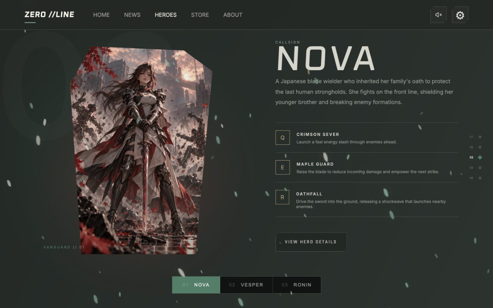
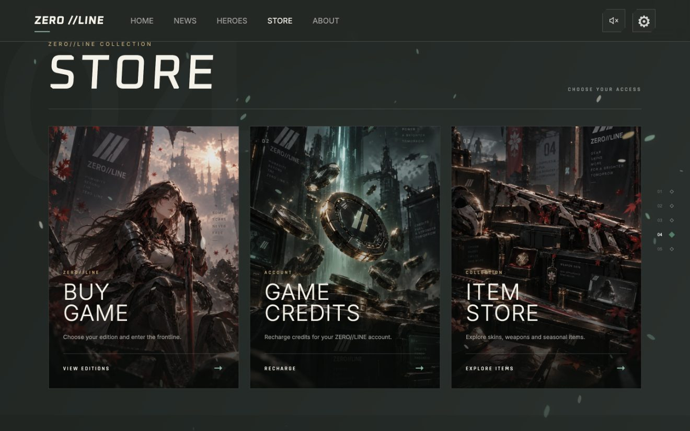
将共同照片、时间节点、城市坐标与未来心愿编织为桌面与移动端原生适配的双人专属空间。
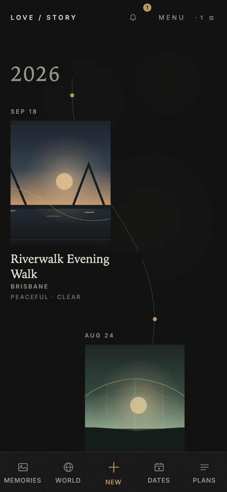
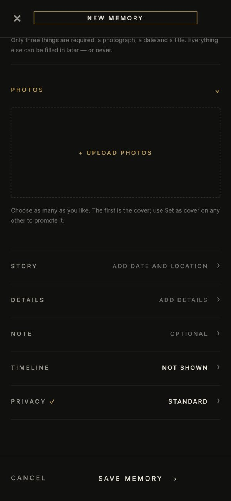
结合公开产品社区评论分析与开发期双人实测日志，将碎片化相册痛点转化为以“故事单元”为核心的架构。
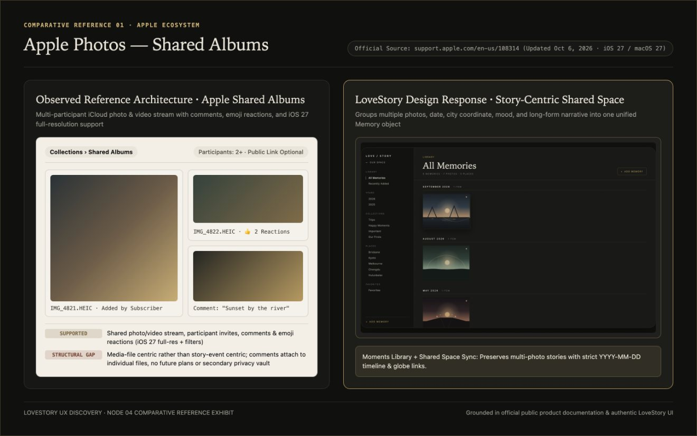
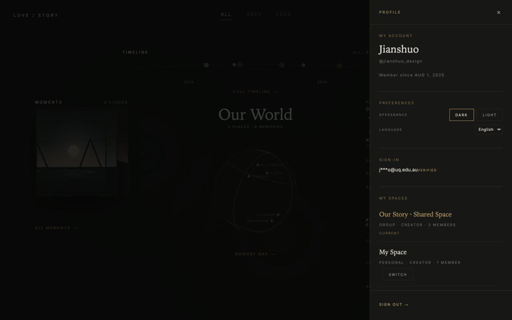
外部网格以单封面维持整洁秩序，点击后在 #20211E 中性暗房画框内展开 Print 01/02 切换与地图定位。
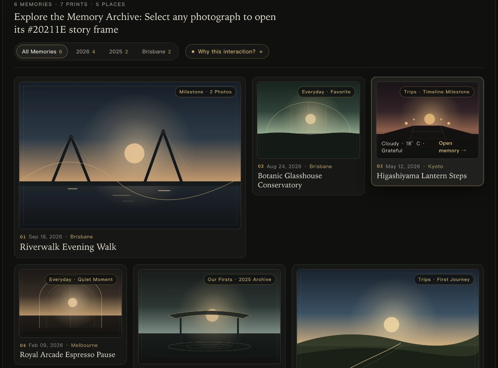
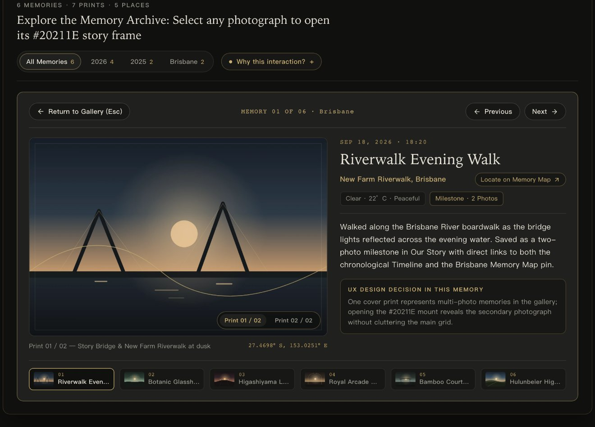
无论是从顶部编年时间轴选择日期，还是在正射地球仪点击城市坐标，三处视图实时联动切换。
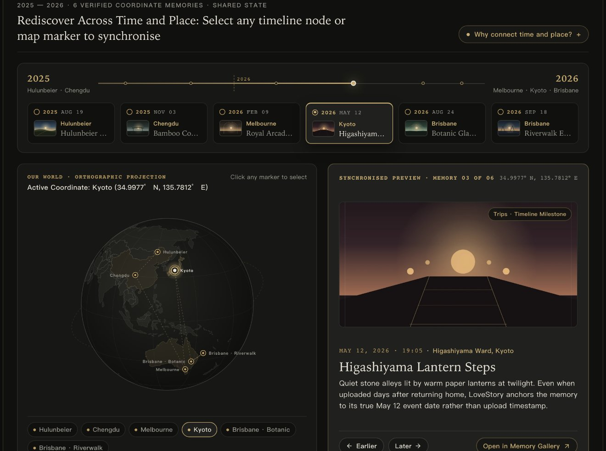
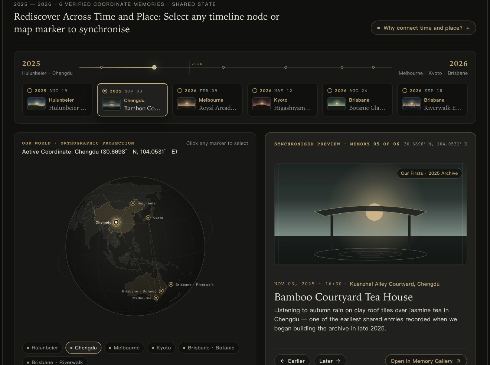
四级角色权限保护私密记录，同一套语义化组件无缝适配 Dark Archive (#10110F) 与 Paper & Ink (#F3EFE7)。
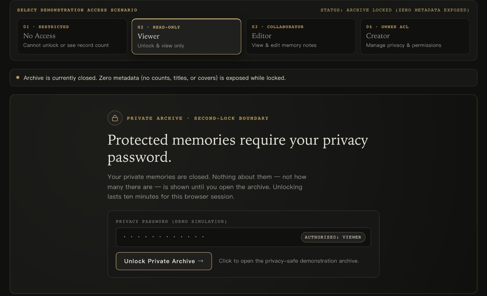
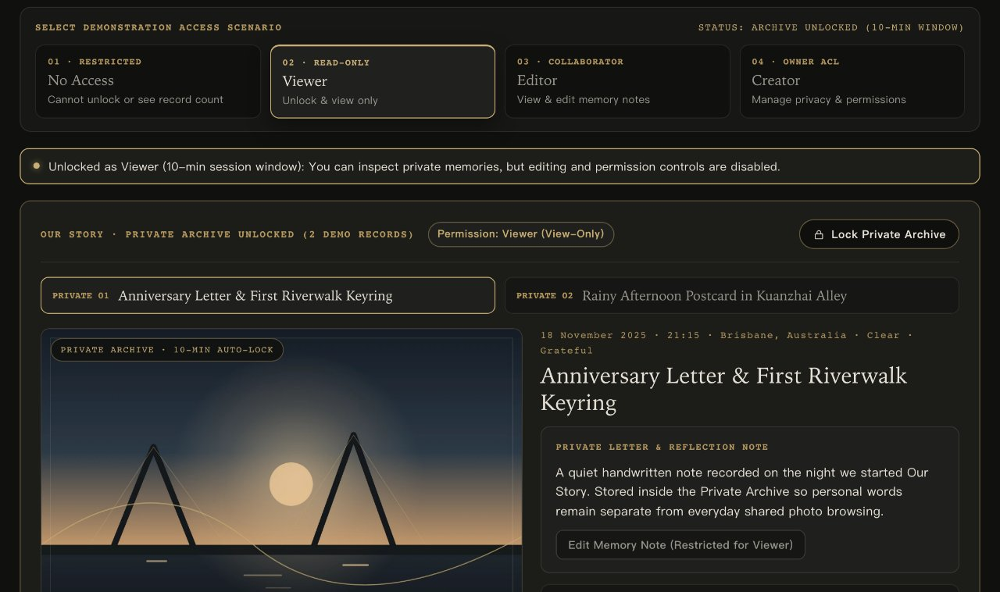
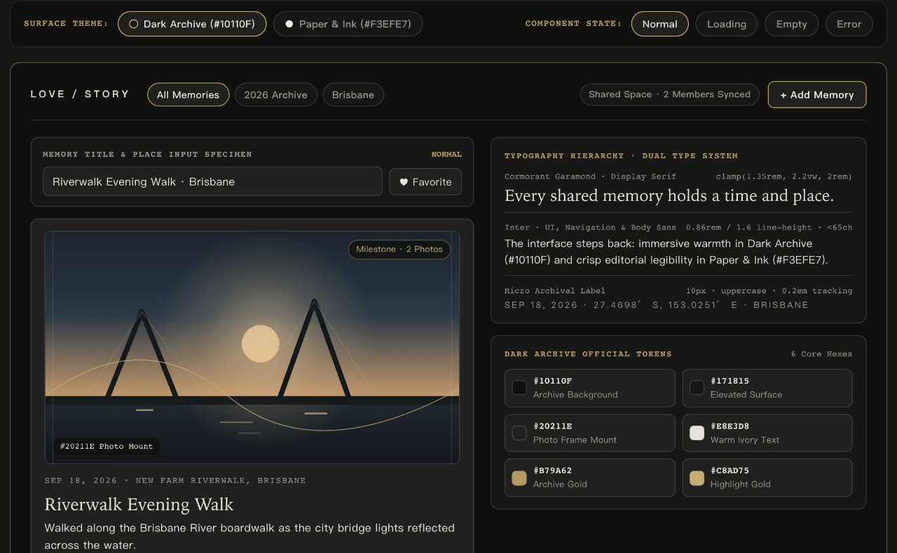
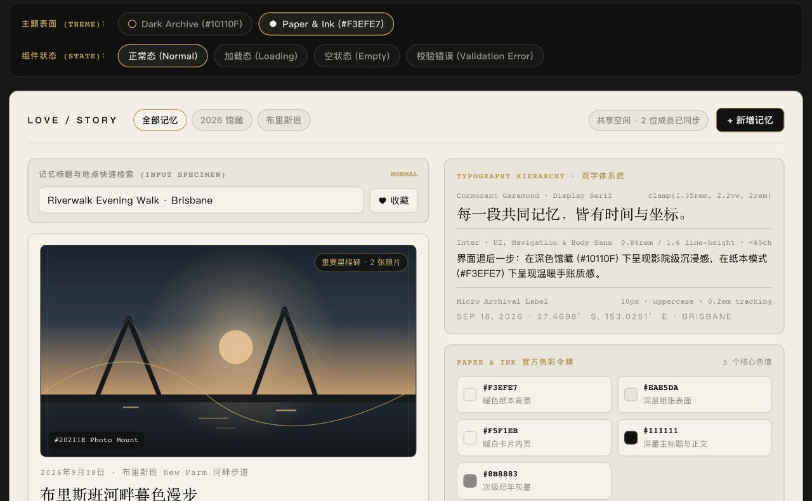